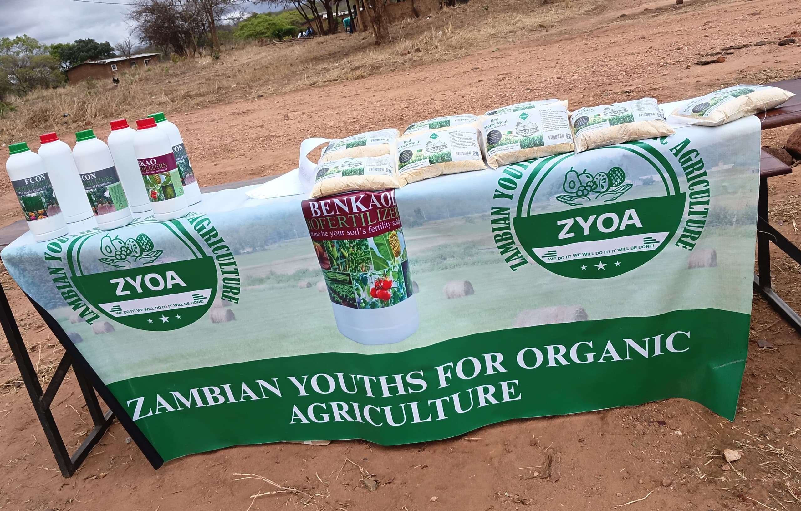
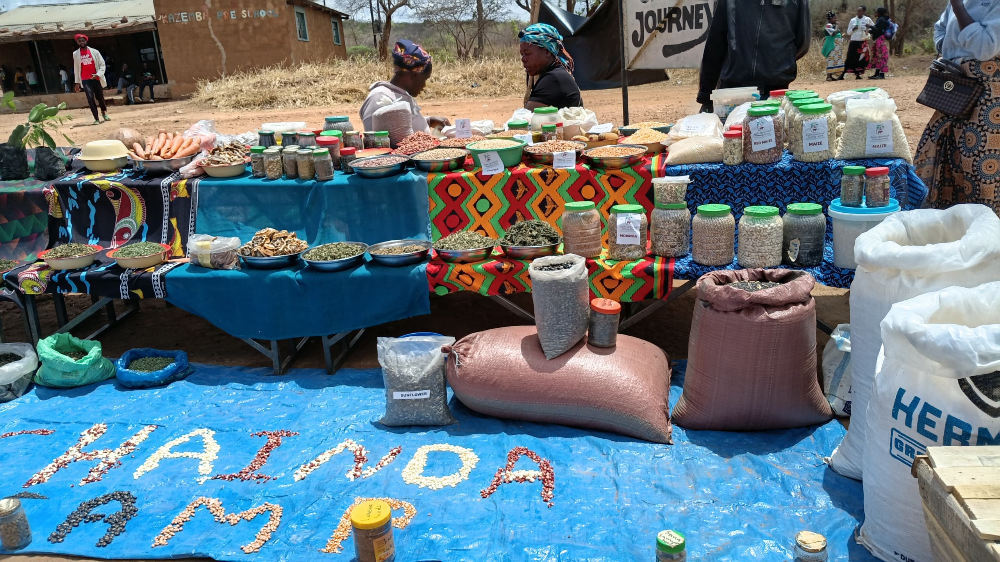
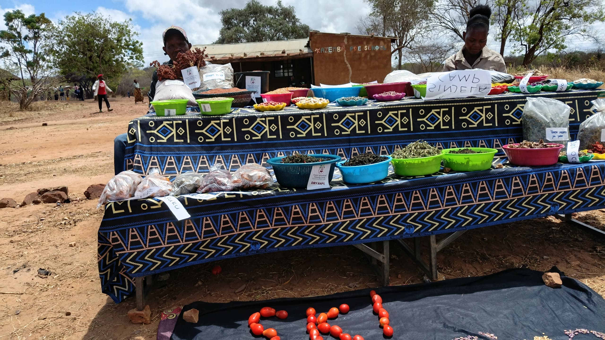
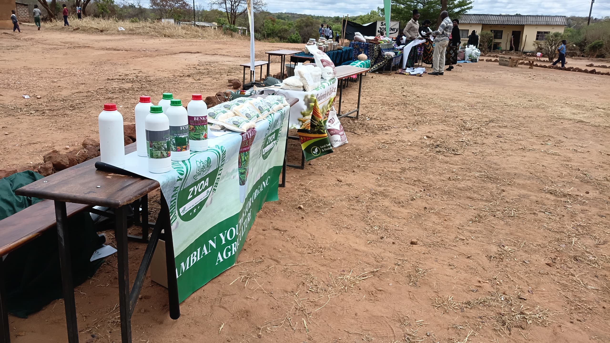

Growing a
Greener, Organic Future
From the Soil Up.
ZYOA Concept is revolutionizing the agricultural landscape in Zambia. We provide affordable, eco-friendly organic fertilizers, Bokashi bio-solutions, and farmer capacity building to protect the environment and improve rural livelihoods.
Youth-Led Innovation
Sustainable Agriculture Zambia"We believe agriculture is not only the backbone of Zambia's economy—it is the foundation of food security, soil health, and youth empowerment."
Our Core Impact Areas:
Our Mission For A Healthier Zambia
To promote sustainable agriculture and youth empowerment by providing affordable, eco-friendly organic fertilizers, while improving livelihoods and protecting the environment.
At ZYOA, we are committed to revolutionizing the agricultural landscape in Zambia. We address the rising crisis of chemical input costs and soil degradation by producing potent organic fertilizers made from locally sourced materials, giving small-scale farmers the tools to thrive.

Transformative Organic Solutions
Our initiatives empower smallholder farmers, restore degraded soils, and train young agricultural leaders across Zambia.
Organic Fertilizer Production
We formulate and distribute high-grade Bokashi bio-fertilizers and organic soil conditioners that nourish plants naturally and build long-term soil carbon.
View Formulation DetailsFarmer Training & Capacity
We host hands-on workshops and field demonstrations teaching composting, natural pest control, crop rotation, and water-wise organic cultivation.
Learn About TrainingYouth Empowerment
We mentor and equip young Zambians to see agriculture as an innovative, profitable enterprise, driving job creation and food sovereignty.
Youth InitiativesEnvironmental Stewardship
We champion biodiversity, clean water protection, and soil carbon sequestration by steering farming away from harmful synthetic agrochemicals.
Read Environmental ArticlesEmpowering Communities Across Zambia
Join us in our mission to empower farmers and promote sustainable agriculture in Zambia. Together, we can make a difference.
Our innovative solutions are designed to help farmers thrive in an ever-changing world. From our demonstration farms in Kanakantapa to community workshops across the province, ZYOA is on the ground every day cultivating success.



